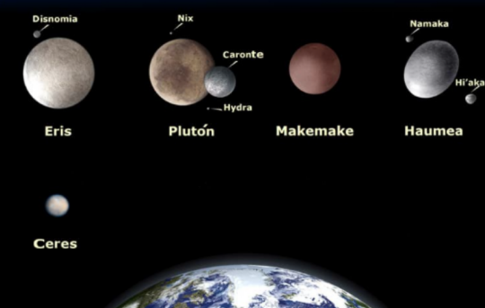

Otros elementos del Sistema Solar
Inicio
Otros elementos
Además de los ocho planetas, en el Sistema Solar existen muchos otros cuerpos:
Satélites: Se llama satélite a un cuerpo que gira alrededor de otro que suele ser más ande. Son sólidos y
carecen de atmósfera.
En el Sistema Solar los planetas poseen satélites, si bien alrededor de la Tierra lo hay un satélite
natural: la Luna.
La Luna es un cuerpo celeste rocoso y sin anillos. Los seres humanos la admiramos por su
hermosura, por su cercanía y porque brilla en el cielo. Debes saber que en realidad la luna es un
planeta oscuro que no desprende luz, sino que refleja la luz que recibe del sol.
*Se llama Satélites artificiales a los fabricados y lanzados al espacio por los humanos para tomar
todo tipo de datos sobre un planeta
Planetas enanos:Son pequeños planetas que también orbitan alrededor del Sol y NO son satélites de ningún otro
planeta. En nuestro Sistema Solar existen cinco: Ceres, Eris, Makemake, Haumea y Plutón

Volver al inicio